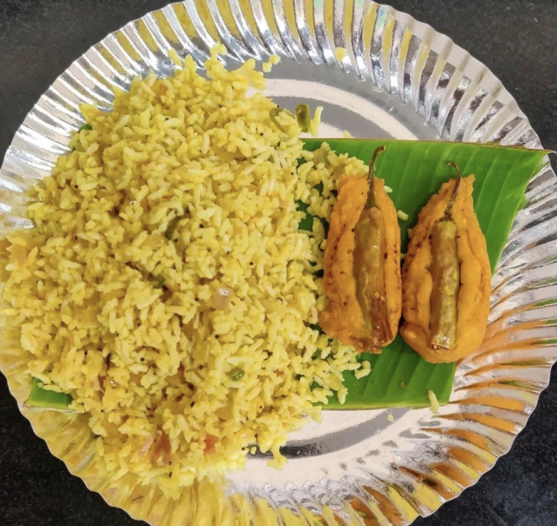

Vaggarani Mirchi

Description
Vaggarani Mirchi is the favorite breakfast cum snack of the people of Ballari. You can find a
stall within walkable distance from any point in town. People love it so much that they
start missing it once they move to other cities.
Ingredients
For Vaggarani
- 2 cups Puffed rice(murmura)
- 1 onion finely sliced
- 3-4 green chillies
- 2 tbsp Roasted chana dal
- Handful peanuts
- 1/2 lemon
- 1/2 tsp mustard
- 1/2 tsp jeera
- 1 tsp Urad dal
- Handful curryleaves
- Salt as per taste
- 2 tsp oil
For Mirchi Bajji
- 10 Chillies
- 1 Cup Besan
- 2 tbsp Riceflour
- Salt as per taste
- 1/2 tbsp Ajwain Powder
- Water as required
- Oil for deep frying
Steps
- Soak murmura in water for two to three minutes. Squeeze water from murmura using hands and keep it aside.
- Grind roasted chana dal along with 1/2tsp fried jeera. Keep aside
- Heat oil in a pan, put mustard,Urad dal and jeera for tadka. Once it starts splitting, add curry leaves.
- Fry onion and chilli slices along with the tadka, put turmeric and mix well.
- Now, add water squeezed murmura, salt and the roasted chana dal powder. Toss well so that everything is mixed well.
- Take it off the stove. Squeeze half lemon.
- For Mirchi bajji, make a batter of besan,rice flour, salt and ajwain powder with require water.
- Heat oil in a kadaai, dip chilli in the batter, put it in oil and deep fry till golden brown.
- Serve Vaggarani with Mirchi Bajji